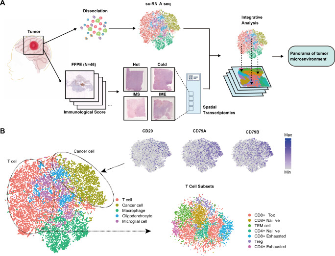
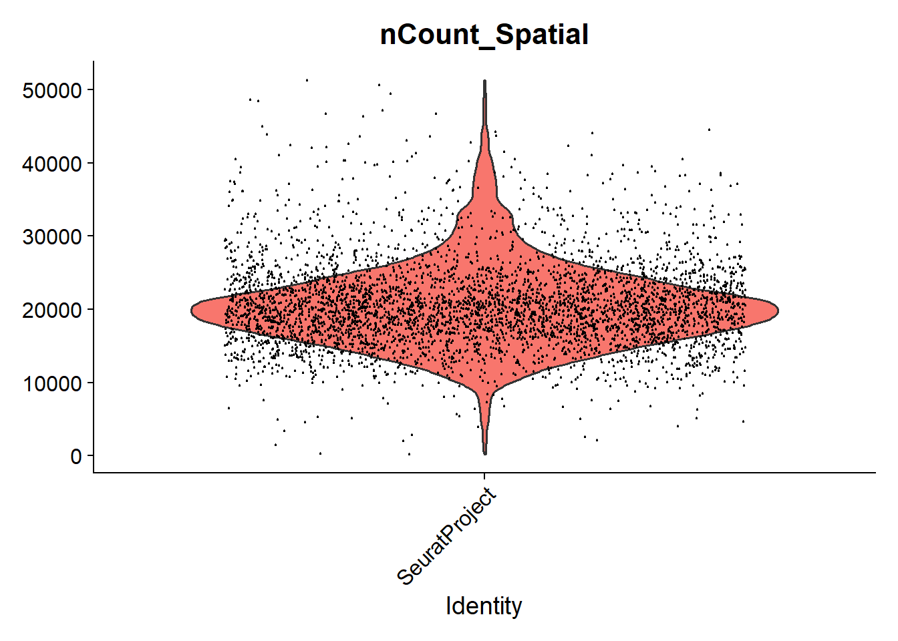
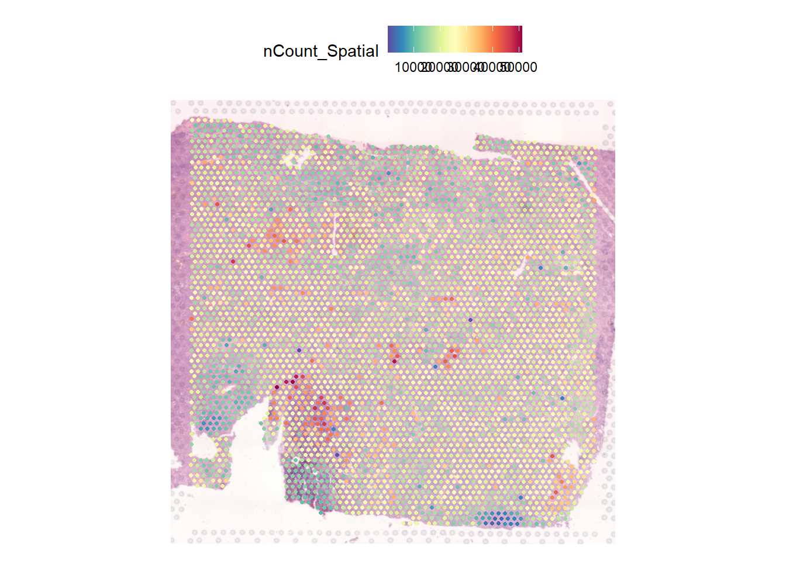

if(!require("BiocManager")) install.packages("BiocManager")
BiocManager::install("GEOquery")
install.packages("R.utils")Reading 10X Spatial Data from GEO into R
Overview
Lots of spatial transcriptomics data is becoming available in R, but how do you load it into R for analysis? I will discuss an example of a dataset uploaded to Gene Expression Omnibus
The data
The dataset I will be looking comes from Spatial single cell analysis of tumor microenvironment remodeling pattern in primary central nervous system lymphoma
Here is an overview of the study.
 If we are interested in tumour microenvironment we might want to explore the dataset for ourselves and test some hypotheses. The data are available in Gene Expression Onmibus (GEO), but unfortunately not in a form that we can immediately use.
Packages required
The following packages will handle the download and re-organisation of the data
Our eventual aim will be to load the data into Seurat, so if you want to start looking at the data you can download this too.
install.packages("Seurat")Downloading using GEOquery
The GEOquery package has long been a favourite of mine for downloading data from GEO. However, don’t get too excited because it was developed during the days of microarrays and has limited functionality for sequencing datasets. The getGEO function will download some meta data about this dataset.
library(GEOquery)
geo <- getGEO("GSE230207")
geo$GSE230207_series_matrix.txt.gz
ExpressionSet (storageMode: lockedEnvironment)
assayData: 0 features, 4 samples
element names: exprs
protocolData: none
phenoData
sampleNames: GSM7192449 GSM7192450 GSM7192451 GSM7192453
varLabels: title geo_accession ... tissue:ch1 (43 total)
varMetadata: labelDescription
featureData: none
experimentData: use 'experimentData(object)'
pubMedIds: 37120690
Annotation: GPL18573 Since getGEO is also capable of downloading datasets that comprise multiple different technologies, the result is in the form a list. The particular dataset we want only have one type of data (spatial transcriptomics), so we subset the first item in the list. We can access the meta, or phenotypic data, using the pData function.
meta <- pData(geo[[1]])
meta[,1:5] title geo_accession status submission_date
GSM7192449 hot GSM7192449 Public on May 01 2023 Apr 20 2023
GSM7192450 cold GSM7192450 Public on May 01 2023 Apr 20 2023
GSM7192451 IME GSM7192451 Public on May 01 2023 Apr 20 2023
GSM7192453 IMS GSM7192453 Public on May 01 2023 Apr 20 2023
last_update_date
GSM7192449 May 08 2024
GSM7192450 May 08 2024
GSM7192451 May 08 2024
GSM7192453 May 08 2024The data we are interested have been uploaded as supplementary material, and conveniently GEOquery has a function for downloading these data. Depending on the speed of your network connection this may take a while. If the download fails, you might need to increase the timeout option in R.
# You may need to un-comment the next line to increase the download timeout
#options(timeout = 10000)
getGEOSuppFiles("GSE230207")You should now have a file called GSE230207_RAW.tar in a folder called GSE230207. This tar file is essentially a way of transferring a dataset consisting many separate files into a single download.
Fun fact
The name tar is short for Tape ARchive and harks back to the early days of computing.
The format and its associated command-line utility were originally developed for archiving files onto magnetic tape drives on Unix systems in the early days of computing.
Although its original purpose was tape backup, the tar utility is now widely used on Unix-like systems (like Linux) as a general-purpose archive format (often called a tarball) to bundle multiple files and directories into a single file for distribution, backup, and transport, regardless of the storage medium.
file.exists("GSE230207/GSE230207_RAW.tar")[1] TRUER has a built-in function, untar for extracting all the files contained in the archive to a folder of our choosing (exdir). We’ll just extract to the current working directory. After untar has finished we can list the contents of the working directory.
untar("GSE230207/GSE230207_RAW.tar", exdir = ".")
list.files("./")You’ll notice that lots of files have appeared, and futhermore they are prefixed by the GEO IDs that we discovered using GEOquery (GSM7192449, GSM7192450, GSM7192451 and GSM7192452)
With list.files we can list everything that contains one of these IDs and notice that the files are named very predictably. This means for a given GEO ID we know what files to expect, which will be helpful to organise our files in a way that Seurat expects.
list.files(pattern = "GSM7192449")[1] "GSM7192449_aligned_fiducials.jpg.gz"
[2] "GSM7192449_detected_tissue_image.jpg.gz"
[3] "GSM7192449_hot.h5"
[4] "GSM7192449_scalefactors_json.json.gz"
[5] "GSM7192449_tissue_hires_image.png.gz"
[6] "GSM7192449_tissue_lowres_image.png.gz"
[7] "GSM7192449_tissue_positions_list.csv.gz"list.files(pattern = "GSM7192450")[1] "GSM7192450_aligned_fiducials.jpg.gz"
[2] "GSM7192450_cold.h5"
[3] "GSM7192450_detected_tissue_image.jpg.gz"
[4] "GSM7192450_scalefactors_json.json.gz"
[5] "GSM7192450_tissue_hires_image.png.gz"
[6] "GSM7192450_tissue_lowres_image.png.gz"
[7] "GSM7192450_tissue_positions_list.csv.gz"Folder structure expected by Seurat
Our eventual goal is to use a function called Load10X_Spatial in the Seurat package, which data to be organised and named in a very specific manner. For a sample called Sample_1 it should look like this:-
Sample_1
├── filtered_feature_bc_matrix.h5/
└── spatial/
├── tissue_hires_image.png
├── tissue_lowres_image.png
├── scalefactors_json.json
└── tissue_positions_list.csv
└── ... + other images files if required
In other words, we need to create a separate folder for each of the four samples named according to the sample name. The “h5” file should be placed here and all other image data should be in a folder named spatial. As the IDs created by GEO are completely arbitrary and not related to the underlying question we will rename to some relating to the sample groups. This labels for this are found in the title column of the meta data.
First we’ll define a few variables
## The GEO IDs that are used in the original naming scheme
geo_ids <- rownames(meta)
## Get more meaningful names
titles <- meta$title
## Make new sample names that we will use in Seurat
new_names <- paste("TME", meta$title, sep = "_")
## These are the common names of the image files we are going to copy (each will be prefixed by a sample name)
required_files <- c("aligned_fiducials.jpg.gz",
"detected_tissue_image.jpg.gz",
"scalefactors_json.json.gz",
"tissue_hires_image.png.gz",
"tissue_lowres_image.png.gz",
"tissue_positions_list.csv.gz")A for loop is now used to copy the files for each sample. The code is probably a bit old fashioned, but it seems to do the job and doesn’t take too long. 🤷 Maybe at some point I could rewrite using purrr….
The code also prints messages to the screen to keep track of the copying and renaming process.
## Do this for all samples
for(i in 1:length(geo_ids)){
new_dir <- new_names[i]
new_spatial_dir <- paste0(new_names[i], "/spatial")
message(paste("Creating new folder", new_dir, "to copy files prefixed with", geo_ids[i]))
dir.create(new_dir, showWarnings = FALSE)
dir.create(new_spatial_dir, showWarnings = FALSE)
## Copy the h5 file
h5_file <- paste0(geo_ids[i], "_",titles[i],".h5")
new_h5_file <- paste0(new_dir, "/filtered_feature_bc_matrix.h5")
message(paste("Copying h5 file", h5_file, "to", new_h5_file))
file.copy(h5_file, new_h5_file)
## Copy all the image files
for(j in 1:length(required_files)){
from <- paste0(geo_ids[i], "_", required_files[j])
to <- paste0(new_names[i], "/spatial/", required_files[j])
message(paste("Copying", from, "to", to))
file.copy(from, to)
R.utils::gunzip(to, skip=TRUE)
}
}Creating new folder TME_hot to copy files prefixed with GSM7192449Copying h5 file GSM7192449_hot.h5 to TME_hot/filtered_feature_bc_matrix.h5Copying GSM7192449_aligned_fiducials.jpg.gz to TME_hot/spatial/aligned_fiducials.jpg.gzCopying GSM7192449_detected_tissue_image.jpg.gz to TME_hot/spatial/detected_tissue_image.jpg.gzCopying GSM7192449_scalefactors_json.json.gz to TME_hot/spatial/scalefactors_json.json.gzCopying GSM7192449_tissue_hires_image.png.gz to TME_hot/spatial/tissue_hires_image.png.gzCopying GSM7192449_tissue_lowres_image.png.gz to TME_hot/spatial/tissue_lowres_image.png.gzCopying GSM7192449_tissue_positions_list.csv.gz to TME_hot/spatial/tissue_positions_list.csv.gzCreating new folder TME_cold to copy files prefixed with GSM7192450Copying h5 file GSM7192450_cold.h5 to TME_cold/filtered_feature_bc_matrix.h5Copying GSM7192450_aligned_fiducials.jpg.gz to TME_cold/spatial/aligned_fiducials.jpg.gzCopying GSM7192450_detected_tissue_image.jpg.gz to TME_cold/spatial/detected_tissue_image.jpg.gzCopying GSM7192450_scalefactors_json.json.gz to TME_cold/spatial/scalefactors_json.json.gzCopying GSM7192450_tissue_hires_image.png.gz to TME_cold/spatial/tissue_hires_image.png.gzCopying GSM7192450_tissue_lowres_image.png.gz to TME_cold/spatial/tissue_lowres_image.png.gzCopying GSM7192450_tissue_positions_list.csv.gz to TME_cold/spatial/tissue_positions_list.csv.gzCreating new folder TME_IME to copy files prefixed with GSM7192451Copying h5 file GSM7192451_IME.h5 to TME_IME/filtered_feature_bc_matrix.h5Copying GSM7192451_aligned_fiducials.jpg.gz to TME_IME/spatial/aligned_fiducials.jpg.gzCopying GSM7192451_detected_tissue_image.jpg.gz to TME_IME/spatial/detected_tissue_image.jpg.gzCopying GSM7192451_scalefactors_json.json.gz to TME_IME/spatial/scalefactors_json.json.gzCopying GSM7192451_tissue_hires_image.png.gz to TME_IME/spatial/tissue_hires_image.png.gzCopying GSM7192451_tissue_lowres_image.png.gz to TME_IME/spatial/tissue_lowres_image.png.gzCopying GSM7192451_tissue_positions_list.csv.gz to TME_IME/spatial/tissue_positions_list.csv.gzCreating new folder TME_IMS to copy files prefixed with GSM7192453Copying h5 file GSM7192453_IMS.h5 to TME_IMS/filtered_feature_bc_matrix.h5Copying GSM7192453_aligned_fiducials.jpg.gz to TME_IMS/spatial/aligned_fiducials.jpg.gzCopying GSM7192453_detected_tissue_image.jpg.gz to TME_IMS/spatial/detected_tissue_image.jpg.gzCopying GSM7192453_scalefactors_json.json.gz to TME_IMS/spatial/scalefactors_json.json.gzCopying GSM7192453_tissue_hires_image.png.gz to TME_IMS/spatial/tissue_hires_image.png.gzCopying GSM7192453_tissue_lowres_image.png.gz to TME_IMS/spatial/tissue_lowres_image.png.gzCopying GSM7192453_tissue_positions_list.csv.gz to TME_IMS/spatial/tissue_positions_list.csv.gzWe can check for a particular sample if the correct structure is in place
list.files("TME_cold/",recursive = TRUE)[1] "filtered_feature_bc_matrix.h5" "spatial/aligned_fiducials.jpg"
[3] "spatial/detected_tissue_image.jpg" "spatial/scalefactors_json.json"
[5] "spatial/tissue_hires_image.png" "spatial/tissue_lowres_image.png"
[7] "spatial/tissue_positions_list.csv"We can load Seurat and hopefully it will be able to read the data 🤞
library(Seurat)Loading required package: SeuratObjectLoading required package: sp
Attaching package: 'SeuratObject'The following object is masked from 'package:BiocGenerics':
intersectThe following objects are masked from 'package:base':
intersect, ttme_cold <- Load10X_Spatial("TME_cold/")Success! 🎉 Of course, there is much that we can do with these data and this will be a topic for another time. As a quick preview we can perform QC and look at distribution of counts
VlnPlot(tme_cold, features = "nCount_Spatial", pt.size = 0.1) + NoLegend()Warning: Default search for "data" layer in "Spatial" assay yielded no results;
utilizing "counts" layer instead.Warning: The `slot` argument of `FetchData()` is deprecated as of SeuratObject 5.0.0.
ℹ Please use the `layer` argument instead.
ℹ The deprecated feature was likely used in the Seurat package.
Please report the issue at <https://github.com/satijalab/seurat/issues>.Warning: `PackageCheck()` was deprecated in SeuratObject 5.0.0.
ℹ Please use `rlang::check_installed()` instead.
ℹ The deprecated feature was likely used in the Seurat package.
Please report the issue at <https://github.com/satijalab/seurat/issues>.Warning: `aes_string()` was deprecated in ggplot2 3.0.0.
ℹ Please use tidy evaluation idioms with `aes()`.
ℹ See also `vignette("ggplot2-in-packages")` for more information.
ℹ The deprecated feature was likely used in the Seurat package.
Please report the issue at <https://github.com/satijalab/seurat/issues>.
And what we will be interested in is how these counts are distributed across the tissue.
SpatialFeaturePlot(tme_cold, features = "nCount_Spatial")
More next time!